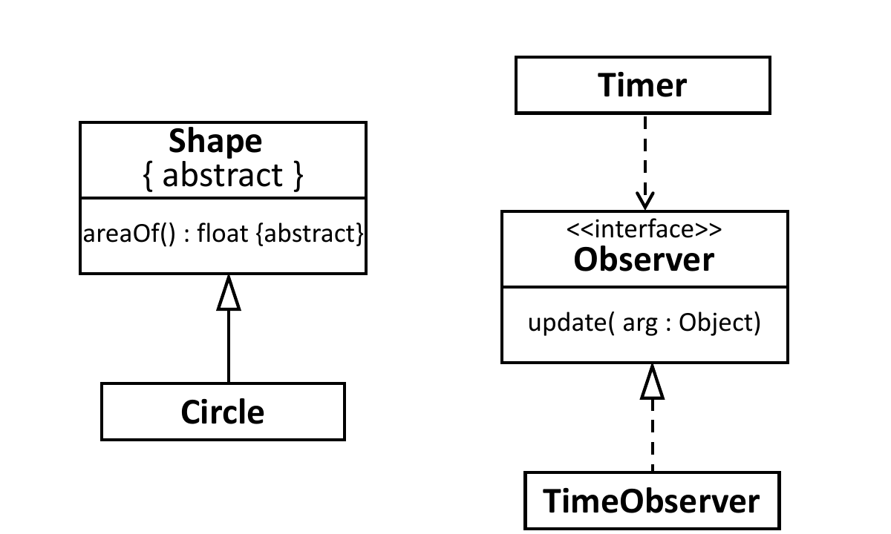
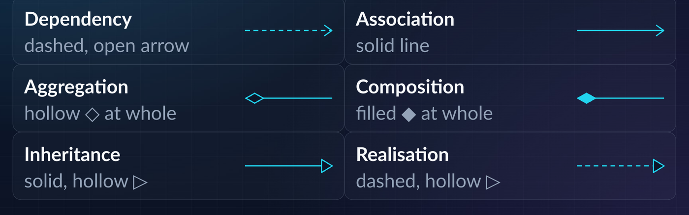
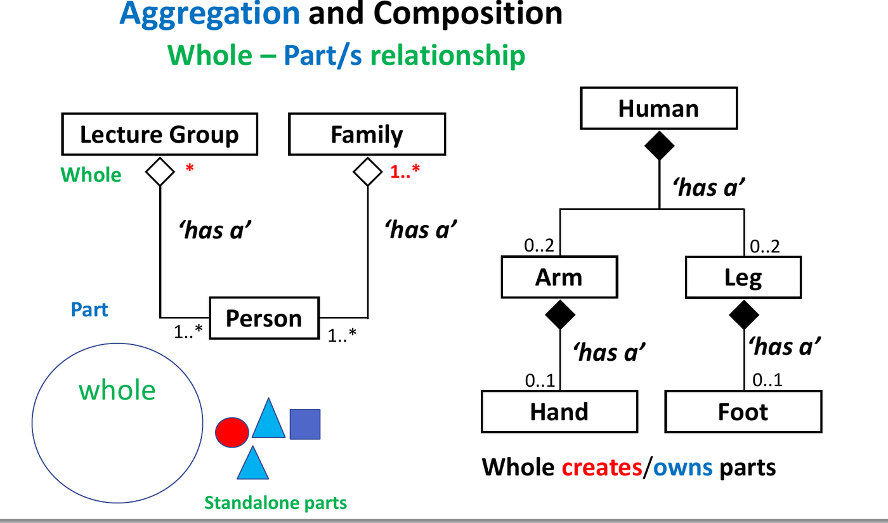
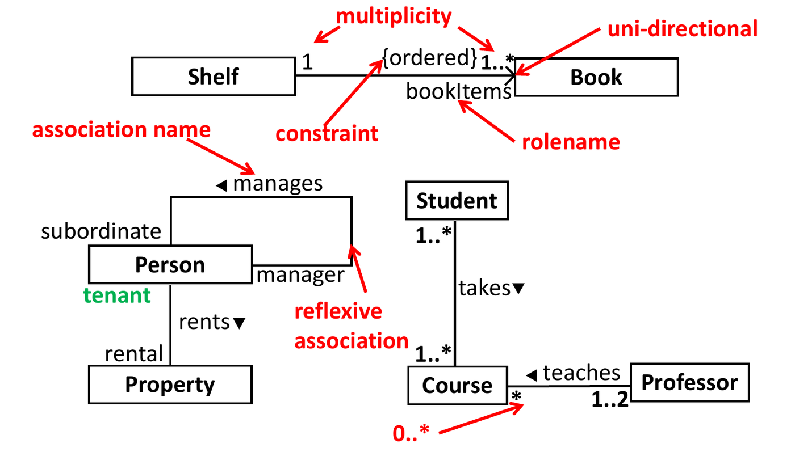
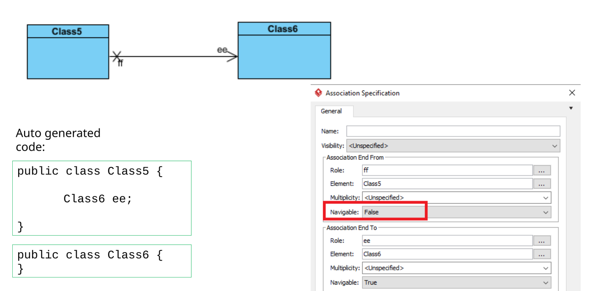
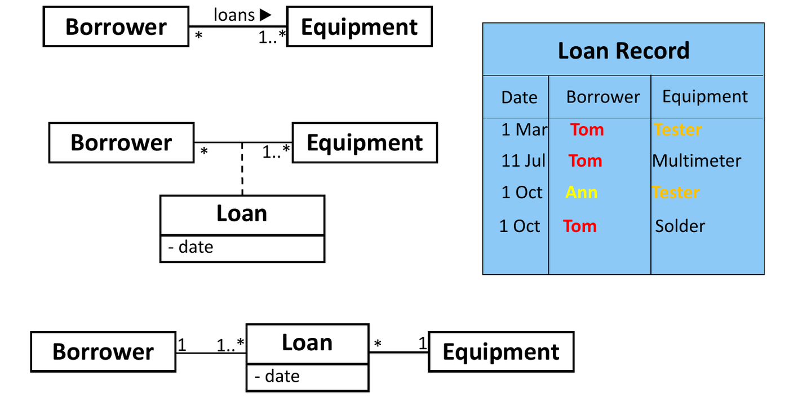

The Unified Modeling Language (UML) is the industry-standard visual notation for specifying, visualizing, constructing, and documenting the artifacts of object-oriented software systems.
A Class Diagram provides a static structural view of a system, depicting classes, their internal attributes and operations, and the discrete semantic relationships that bind them together.
1. Class Notation and Compartments
A class is rendered as a rectangle partitioned into three distinct compartments:

- Top Compartment (Classifier Name):
- The class name in bold, centered.
- Abstract classes: The name is italicized or decorated with
the property
{abstract}. - Interfaces: Designated with the stereotype
<<interface>>centered above the name.
- Middle Compartment (Attributes):
- Syntax:
[visibility] name [multiplicity] : type [= default]
- Syntax:
- Bottom Compartment (Operations / Methods):
- Syntax:
[visibility] name(parameterList) : returnType
- Syntax:
Member Visibility Symbols and Font Conventions
| Visibility Modifier | UML Symbol | Java Meaning |
|---|---|---|
public |
+ |
Accessible by all classes anywhere |
private |
- |
Accessible exclusively within the declaring class |
protected |
# |
Accessible within package and by derived subclasses |
package-private |
~ |
Accessible exclusively within the identical package |
static Member |
Underlined | Belongs to class scope, not instance
(ClassName.member) |
abstract Operation |
Italics | No implementation; must be overridden by concrete subclass |

2. The Six Fundamental UML Class Relationships
Exams frequently test the visual symbols, arrow styles, and code mappings for all six UML relationships:

| Relationship | Visual Notation | Line Style & Head | Semantic Meaning | Java Code Implementation |
|---|---|---|---|---|
| Dependency | Client ..> Supplier |
Dashed line, open arrow
--> |
“Uses-a” (transient; method parameter, local variable, or return type) | void foo(B b) { b.bar(); } |
| Association | A ──> B (Directed) or A ── B |
Solid line, optional open arrow | “Knows-a” / structural link; persistent reference field | class A { private B b; } |
| Aggregation | Whole ◇── Part |
Solid line, hollow diamond at Whole | “Has-a” (weak whole-part; part outlives whole) | class Team { List<Player> p; } |
| Composition | Whole ◆── Part |
Solid line, filled diamond at Whole | “Contains-a” (strong whole-part; lifetime dependency) | class Car { private Engine e = new Engine(); } |
| Generalization | Subclass ──▷ Superclass |
Solid line, hollow triangle at Superclass | “Is-a” (inheritance) | class Sub extends Super |
| Realization | Class ..▷ Interface |
Dashed line, hollow triangle at Interface | “Implements-contract” | class Impl implements Inter |
3. Association vs. Aggregation vs. Composition
Distinguishing between these three structural relationships is the single most tested topic in OO exams:
Association ("Knows-a") Aggregation ("Has-a") Composition ("Contains-a")
┌───────┐ ┌───────┐ ┌───────┐ ┌───────┐ ┌───────┐ ┌───────┐
│ Class │────────►│ Class │ │ Whole │◇───────►│ Part │ │ Whole │◆───────►│ Part │
└───────┘ └───────┘ └───────┘ └───────┘ └───────┘ └───────┘
Reference field exists; Part belongs to Whole; Part is physically bound;
no whole-part lifecycle Part outlives Whole Part destroyed if Whole dies
The Lifetime Dependency Test (Composition)
- Aggregation (Shared / Weak Ownership): The Part can
exist independently of the Whole. If the Whole is destroyed, the Part
persists. Parts can be shared across multiple Wholes simultaneously.
- Example: A
UniversityhasStudents. If the university closes down, the students still exist. - Example: A
TeamhasPlayers. A player can transfer to another team.
- Example: A
- Composition (Exclusive / Strong Ownership): The
Part cannot exist without the Whole. The Whole is responsible for
instantiating and destroying the Part. If the Whole is destroyed, the
Part is destroyed with it. The Part belongs to at most one Whole at any
time (multiplicity at the Whole end is strictly
1).- Example: A
PersonhasHands. If the person ceases to exist, the hands cease to exist. - Example: An
OrderhasOrderLineItems. Deleting the order deletes all associated line items.
- Example: A
4. Multiplicity Adornments and Association Endpoints
Multiplicity specifies cardinality constraints: how many instances of class can be associated with a single instance of class :

| Multiplicity Syntax | Interpretation |
|---|---|
1 |
Exactly one instance |
0..1 |
Zero or one instance (optional / nullable reference) |
* or 0..* |
Zero or more instances (unbounded collection / list) |
1..* |
At least one instance (mandatory non-empty collection) |
m..n |
Specific inclusive range (e.g., 2..4) |
Navigability and Directed Association
- Undirected Association (
A ── B): Bidirectional link. Class holds a reference to , and class holds a reference to . - Directed Association (
A ──> B): Unidirectional link. Class knows about class , but class has zero awareness or reference to class .

5. Advanced UML Elements: Association Classes and Constraints
Association Class
When an attribute belongs to the relationship itself rather than either participant class, an Association Class is attached to the association line with a dashed line:

- Example: A
Studentenrolls in aCourse. Where does thegradeattribute reside? It cannot sit onStudent(a student has different grades for different courses) orCourse(a course has different grades for different students). It resides on the association classEnrollment.
Constraints
Invariants and business rules enclosed in curly braces
{}:
{ordered}: Collection elements maintain sorted sequence.{readOnly}: Attribute or association cannot be mutated after instantiation.

6. Tracing Toolkit: Translating Java Code to UML Relationships
When inspecting a Java code snippet in an exam, apply this deterministic 4-step decision flowchart:
Step 1: Check Class Declarations
├── Does Class A "extends Class B"? ──► GENERALIZATION (Solid line + Hollow triangle)
└── Does Class A "implements Inter B"? ──► REALIZATION (Dashed line + Hollow triangle)
Step 2: Inspect Class Fields (Instance Variables)
├── Does Class A declare a field of type B (e.g., private B b; or List<B> bList;)?
│ YES ──► It is a structural link (Go to Step 3).
│ NO ──► Check method bodies (Go to Step 4).
Step 3: Analyze the Field's Lifecycle (Whole-Part Dynamics)
├── Does A construct B internally and prevent external sharing (new B() in constructor,
│ destroyed when A is destroyed)? ──► COMPOSITION (Solid line + Filled diamond at A)
├── Does A receive B from outside (e.g., via constructor/setter injection) and B can
│ exist independently of A? ──► AGGREGATION (Solid line + Hollow diamond at A)
└── Is B simply an independent reference without whole-part semantics?
──► ASSOCIATION (Solid line + Open arrow)
Step 4: Inspect Method Parameters, Return Types, and Local Variables
└── Does any method in Class A accept B as parameter, instantiate B locally, or return B,
WITHOUT storing B in an instance field?
──► DEPENDENCY (Dashed line + Open arrow)7. Tutorial and Exam Practice
Wooclap Check: Code-to-Relationship Mapping (Association vs. Dependency)
Question: Analyze the following Java code and identify which relationship statements are correct:
public class A {
private C c;
public void myMethod(B b) {
b.callMethod();
}
}I. Relationship between A and B is Association
- Relationship between A and C is Association
- Relationship between A and B is Dependency
- Relationship between A and C is Dependency
A. I and II
B. I and IV
C. II and III
D. III and IV
Solution:
- Class A to Class C: Class
Adeclares an instance fieldprivate C c;. This creates a persistent structural reference link. Therefore, the relationship is Association (Statement II). - Class A to Class B: Class
Adoes not storeBin an instance variable.Bis received strictly as a transient method parameter insidemyMethod(B b). OncemyMethodfinishes, the link ends. This is a classic “uses-a” relationship, classified as Dependency (Statement III).
Final Answer: C (II and III)
Wooclap Check: Aggregation vs. Composition Identification
Question: Classify the relationship in each scenario as either Aggregation or Composition:
- The relationship between a person’s hands and the person.
- The relationship between canned drinks and a vending machine.
- The relationship between a sports team and its players.
Solution:
- Person and Hands
Composition:
- A hand cannot exist as an independent, functioning entity detached from the human body.
- The lifetime of the hand is strictly bound to the person.
- Vending Machine and Can Drinks
Aggregation:
- Can drinks exist before being placed in the machine, and continue to exist after being dispensed.
- The vending machine functions even when empty.
- Sports Team and Players
Aggregation:
- Players exist independently of the team.
- If the team disbands, players can transfer to other teams.
Exam Check: UML Syntax Errors in Inheritance and Realization
Question: A student draws a class diagram containing:
- A solid line with a hollow triangle pointing from an abstract class
AbstractTEto an interfaceiManager. - A dashed line with a hollow triangle pointing from a concrete class
Teacherto an interfaceiManager. - A solid line with an open arrow pointing from an interface
iCoordinatorto an interfaceiManager.
Identify which element contains a syntax error according to UML standards.
Solution:
- Line 1 is an ERROR: A solid line with a hollow
triangle designates Generalization
(
extends). An abstract class cannot extend an interface; it implements an interface. It must use a dashed line with a hollow triangle (Realization). - Line 2 is CORRECT: Dashed line with hollow triangle
represents Realization (
implements), which correctly connects a class to an interface. - Line 3 is an ERROR: An interface inheriting from
another interface uses Generalization (solid line with hollow triangle,
representing
extends), not a solid line with an open arrow (which represents directed association).
Tutorial 6 Scenario: Designing the Library Capability Model
Question: In a document management system, a
Document can reside inside a Library or inside
a Folder. A Folder can contain documents or
sub-folders. Users possess an Account associated with a
Capability access level.
- What UML pattern models
Foldercontaining other folders and documents? - What relationship binds
AccountandCapability?
Solution:
- The Composite Pattern (Recursive Aggregation):
- Create an abstract superclass
LibraryItem(or interface). - Both
Document(leaf) andFolder(composite) extendLibraryItem. Folderholds an aggregation relationship toLibraryItem(Folder ◇── 0..* LibraryItem), enabling a folder to contain both documents and sub-folders recursively.
- Create an abstract superclass
- Account to Capability:
- Modeled as Directed Association
(
Account ──> 1 Capability) or Aggregation if capabilities are shared domain objects.
- Modeled as Directed Association
(